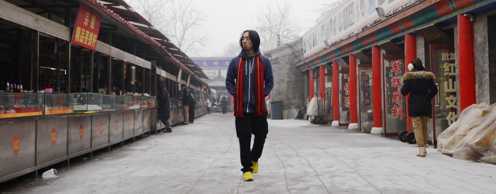

Ge Wang |
Bio Assets

biography:
text (with word count)
curriculum vitae:
pdf
sample presentation:
pdf
profile pictures:
on
flickr
homepages:
stanford | twitter |
facebook |
vimeo
online videos:
Micro Films
by Ge Wang (my Vimeo channel)
original video files (research/apps):
--- my repository
(or see below and right click to "save link as...")
-
Ocarina 2 [Medley]:
video
-
Ocarina [Stairway to Heaven Intro]:
video
-
Ge Wang: The Music Man (2012)
(mini-documentary, by Steve James):
video
-
AutoRap Stress Test:
video
-
Magic Piano [Chariots of Fire]
video
-
Stanford Laptop Orchestra [excerpts]:
video
- (much more, on request - just ask!)
original micro films (life and travel):
--- my repository
(or see below and right-click to "save link as...")
-
"Wayfaring in Beijing" (2013):
(video of my home in Beijing):
2013-wayfaring.mp4
-
"Northeast China (slow edition)" (2013):
(traveling in N.E. China):
2013-ne-slow.mp4
-
"Northeast China (fast edition)" (2013):
(traveling in N.E. China):
2013-ne-fast.mp4
-
"Home in New Jersey (on the road)" (2013):
(at home with parents):
2013-running.mp4
-
"Home in New Jersey (calm)" (2013):
(a calm morning at home with parents):
2013-calm.mp4
-
"Home in New Jersey (dinner time)" (2013):
(dinner time with Mom and Dad):
2013-dinner.mp4
-
"Thanksgiving in Beijing (part 1)" (2013):
(with dear friends from Stanford/Smule):
2013-TiB-part1.mp4
|
|